Après avoir exposé les raisons et les aspects théoriques de notre regroupement en clan, cette démarche peut encore rester abstraite pour nos lecteurs. Que faisons-nous de nos journées ?
C’est ce que nous allons présenter à travers cet article qui retrace une « semaine type » dans le clan des Brigandes, un clan communautaire d’une dizaine de familles vivant dans le sud de la France.
Lundi :
Une nouvelle semaine commence ! Ce matin, au centre communautaire, c’est Roxane qui est chargée de cuisine. Ici, on est végétarien.
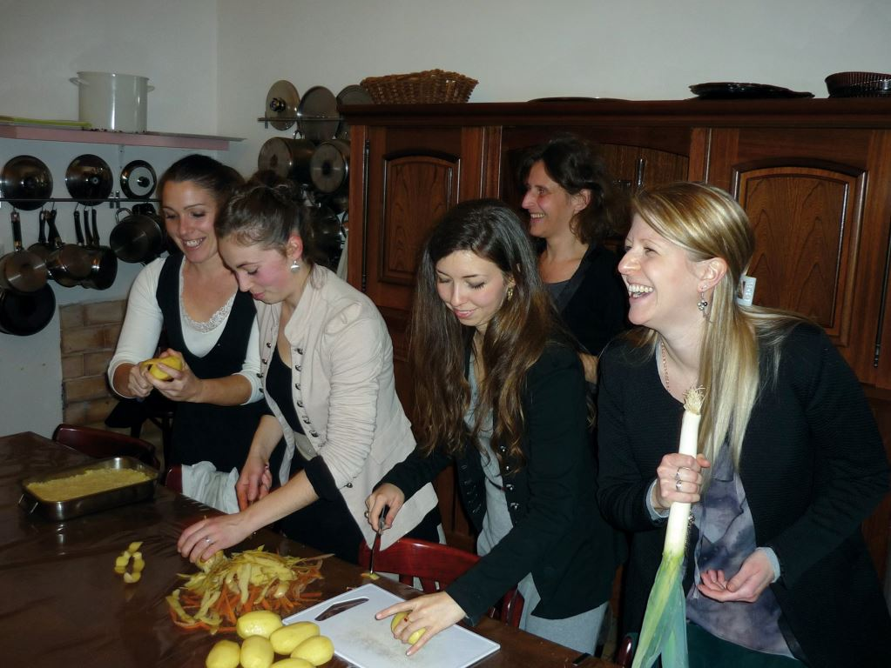Pour alléger la tâche, l’épluchage et coupage des légumes sont l’affaire de toutes les personnes présentes dans la maison, cela réduit à quinze minutes ce qu’une personne seule ferait en deux heures.
Christelle et Claire, deux mamans, occupent les enfants au jardinage. L’observation de la nature et de la vie organique sont des points cruciaux de l’éducation que nous voulons transmettre.
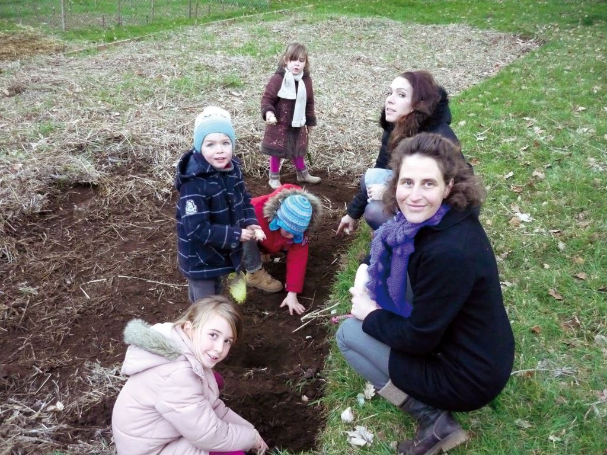Côté bureau, Antoine, responsable du secrétariat des Brigandes, prépare les envois de CD et de brochures commandés durant le week-end. En cela, il est aidé par Roxane lorsque celle-ci n’est pas occupée par les clips des Brigandes. Il faut savoir que les ventes de CD et de brochures couvrent intégralement les frais de l’activité des Brigandes (instrument de musique, matériel informatique, de vidéo, sono et costumes).
Un peu plus loin, Ruedi, le « technicien de la maison », nettoie la chaudière. Ici, non seulement on est végétarien, mais de plus on se chauffe au bois ! Bref, tout le monde est « à son poste », comme dans une caserne mais avec femmes et enfants. Une dizaine de personnes vivent au centre communautaire, alors que les autres familles louent chacune un logement dans un rayon de 10 minutes du centre communautaire.
À dix heures, les hommes se rassemblent pour faire le point sur les travaux des différents groupes. Les activités de la semaine s’organisent à partir de cette réunion.
Ce lundi, l’équipe « musique » commence à travailler la nouvelle chanson de la semaine : « Juste un politicien » qui attaque la caste des malfrats patentés en costume gris ; une offensive à la fois directe et romantique, dont les Brigandes ont le secret.
Nos chansons sont réalisées plus ou moins rapidement selon les styles : de quelques jours jusqu’à un mois pour un titre… La production est en tout cas plus rapide que dans un contexte ordinaire : les artistes vivent à moins de dix minutes les uns des autres, personne ne compte ses heures, et la mise en commun des moyens nous a permis d’avoir un studio avec le matériel requis !
Ce local d’enregistrement et de tournage est situé en plein cœur du village, collé à la mairie, à dix minutes du centre communautaire qui se trouve, quant à lui, dans la forêt. Aujourd’hui, Maxime, le guitariste et arrangeur, Marianne, la chanteuse lead et Jean-Marc le batteur principal sont réunis pour l’enregistrement des percussions. C’est l’étape de fondation de base d’un morceau de musique pop : basse et batterie.
Il faut choisir le bon tempo qui sera vérifié par notre directeur qui est le compositeur des chansons. Si les Brigandes semblent s’amuser dans leurs clips, en réalité, tout cela est un travail sérieux qui demande de la patience car les goûts sont parfois divergents. Pour certains styles, c’est Sara (la pianiste) qui joue la batterie, tout comme elle fait de l’excellente pâtisserie, et toujours avec son rire ensoleillé de Catalogne. Une garderie est organisée pour les tous petits, avec à tour de rôle Gwenvifar et Alzira, une retraitée qui a survécu à l’ambiance trépidante du groupe. Alzira est la doyenne de la communauté, arrivée du Portugal dans les années soixante avec sa valise en carton. On aime sa cuisine.
Pendant ce temps dans une autre pièce, l’équipe « vidéo » (Florian et Étienne) termine le montage du dernier clip.
Chaque lundi soir, les femmes du clan se réunissent au centre communautaire pour chanter et traiter des problèmes qu’elles rencontrent dans la vie de tous les jours.
Il nous semble important de réserver des moments où les femmes peuvent traiter de sujets qui ne concernent pas obligatoirement les hommes.
Cela permet d’aborder les problèmes généraux selon la conscience féminine, pour ensuite confronter les conclusions avec celle des hommes.
C’est une manière positive de travailler sur la polarité hommes/femmes de façon harmonieuse. La réunion des femmes se poursuit avec un repas, et comme chaque lundi, Gwenvifar conclut le banquet avec un nouveau dessert, améliorant de semaine en semaine la légèreté de ses créations grâce aux critiques qu’elle encaisse. On mange, on s’amuse, tout en se disant que la Fraternité, un mot que le système nous sert à toutes les sauces, est devenu pour nous quelque chose de réel.
Mardi :
Le poste « cuisine » change tous les jours : hier, c’était Roxane et aujourd’hui, c’est Karine.
Les activités continuent : secrétariat, travaux divers, éducation des enfants, etc.
Après l’enregistrement de la batterie, c’est la guitare basse d’Angelo et la guitare de
Maxime, ainsi que l’orgue et autres trouvailles sonores qu’il va falloir mettre en boîte.
Le travail de production musicale et vidéo est notre fil rouge depuis deux ans. Le rythme est soutenu, un mot d’ordre : flux tendu.
Cet après-midi, les hommes coupent et fendent du bois afin de le répartir dans les foyers.
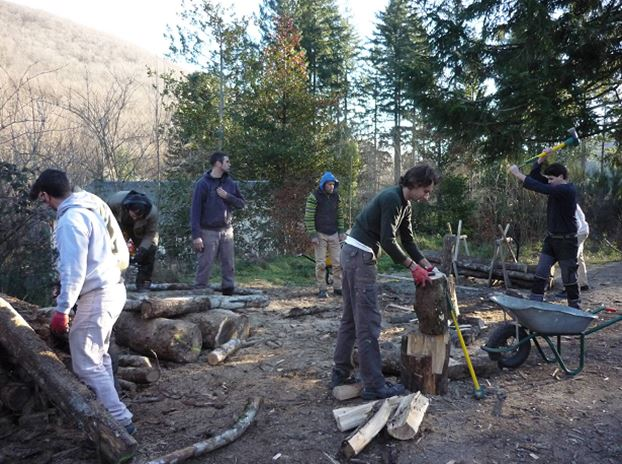Le lundi est un jour féminin et lunaire, mais le mardi, jour de Mars, est un jour plus « viril » : ce soir, les hommes se réunissent au centre communautaire pour répéter des chants plutôt martiaux et traiter des problèmes les concernant. C’est le parallèle à la réunion des femmes du lundi. Il s’ensuit donc un banquet, différent de l’ambiance féminine du lundi : ça rigole plus fort ou, à l'inverse, le ton peut être grave suivant les sujets abordés, dont les attaques contre le groupe des Brigandes. Xavier ou Ruedi (qui a une culture classique) jouent du piano en attendant le repas. La soirée se termine par quelques digestifs et une partie de carte pour ceux qui n’ont pas envie de se coucher.
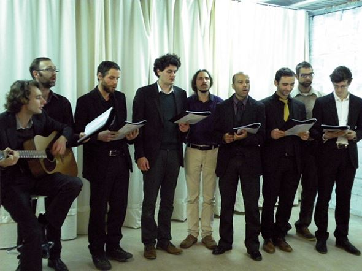Le responsable de la sécurité du studio va rejoindre son poste pour la nuit car nous avons reçu des menaces de gauchistes devenus virulents depuis qu’ils sont encouragés et protégés par le gouvernement. Chaque nuit, à tour de rôle, chacun assure la garde, comme dans une armée. Les gauchistes nocturnes pourraient avoir une mauvaise surprise si l’envie leur prenait de s’approcher de nos locaux.
Mercredi :
Ce matin, réunion de l’équipe « éditions » avec Maxime, Antoine, Ruedi (conseiller juridique et chargé des aspects administratifs), ainsi que Karine (pour la mise en page). Le groupe prévoit en effet de lancer un ouvrage sur la vie en clan, - avec un éditeur allemand - de rééditer certains écrits de Joël Labruyère ainsi que le roman L’Âge des Veilleurs écrit par Maxime. C’est une affaire peu conventionnelle de publier notre premier ouvrage sur la communauté en langue allemande. Le titre « Manifeste pour les clans du futur » a sans doute une résonnance pour le romantisme germanique.
Comme chaque mercredi, une réunion de réflexion a lieu en fin de matinée, sur un thème précis. Notre communauté s’intéresse en effet à de nombreux sujets, de la politique à l’écologie en passant par la spiritualité. Ces réunions sont une plate-forme d’étude qui peut servir de base pour l’élaboration des émissions de Radio Brigandes. Depuis des années, nous avons exploré beaucoup de domaines qui sont synthétisés à travers nos chansons. Des ouvrages sont commentés en commun, et certains sont chargés d’exposer leur travail de réflexion. Ceux qui ne sont pas présents se feront rapporter le contenu de la réunion. Réfléchir ensemble sur la société et son avenir nous semble être une activité essentielle. Ce partage direct est en train de disparaître au profit des réseaux sociaux virtuels, qui ne sont que les reflets superficiels d’un véritable échange. Sans enracinement dans la réalité par l’effort de réflexion des personnes physiquement présentes, on peut difficilement explorer des sujets profonds où interviennent l’expérience et les interventions spontanées des participants. Pour nous, internet est une vitrine pour exposer nos productions, mais ne sera jamais un lieu de communication vivante pouvant déboucher sur des solutions concrètes.
Cet après-midi, au studio, Florian finalise le dernier clip. Les Brigandes répètent déjà le prochain morceau. Marianne imagine d’abord le scénario du clip. Ensuite, notre danseuse Roxane prépare les chorégraphies que les filles vont devoir travailler.
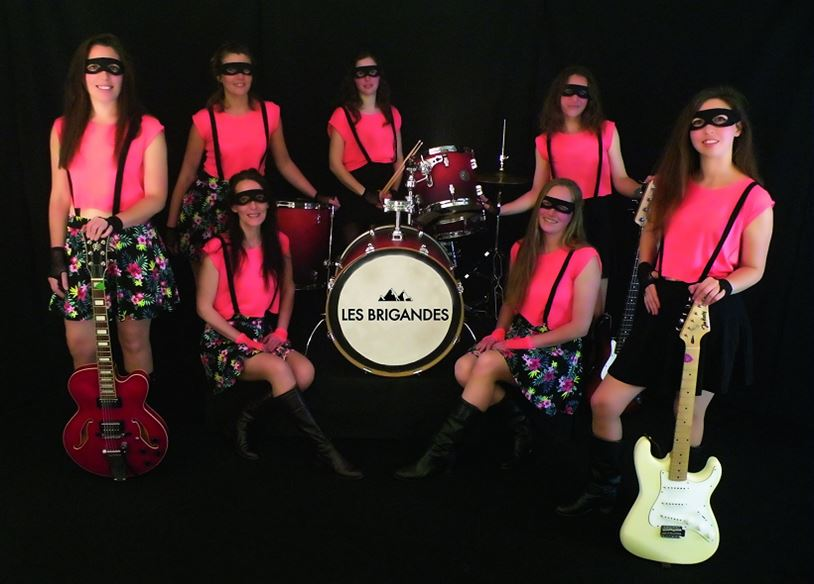Pendant ce temps, Étienne et Bruce font une révision mécanique des voitures qui sont des propriétés collectives. L’organisation en clan permet aux personnes de s’occuper de ce qu’elles aiment faire, ou de ce en quoi elles sont le plus compétentes. Une complémentarité des talents se met ainsi en place naturellement. Personne ne peut dire qu’il n’aime pas telle ou telle tâche car il a le choix, et les corvées sont collectives.
Le mercredi soir, ceux qui vivent à la caserne... heu, au centre communautaire, dînent entre eux, et ceux qui habitent au village se réunissent souvent pour une veillée : chants, jeux ou contes animent la soirée.
Jeudi :
« Juste un politicien », la chanson commencée lundi est déjà bien avancée ! Marianne va enregistrer les chœurs avec Irène et Sara. Il faut que ça avance. Notre directeur artistique, Joël Labruyère vient de composer une nouvelle chanson car les Muses sont encore venues visiter ses insomnies.
Il dit souvent : « la nuit, j’ai le temps pour réfléchir ». Nous maintenons le rythme d’un album tous les huit mois. C’est notre manière de militer, nous tirons en rafale à balles sonores réelles.
Depuis octobre 2015, trois albums sont déjà parus, et le quatrième est déjà entamé. L’efficacité est due à l’organisation communautaire, qui permet la bonne répartition des tâches et la concentration des forces et des talents. Une telle productivité serait impossible avec des personnes isolées, trimant pour leur survie et se débattant dans leurs problèmes personnels. Si la civilisation du sur-individualisme nous a affaiblis par l’isolement, nous essayons de montrer que l’on peut récupérer de la puissance en s’associant à tous les niveaux. La condition d’une bonne association est qu’elle ait une base saine, avec un idéal, et que celui-ci soit assez fort pour dépasser les problèmes et les résistances de chacun.
Cette après-midi Xavier, responsable du jardin, a besoin de trois hommes pour le potager. C’est l’hiver, mais il faut préparer le terrain pour le printemps. Irène, Roxane et Karine font quant à elles de la couture pour les décors et les costumes des clips.
Les enfants sont en cours de chant avec Marianne qui exécute les chansons traditionnelles de France sur son yukulele. 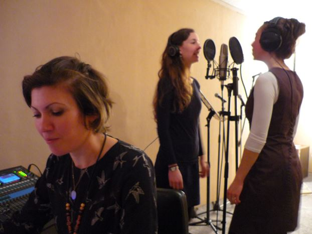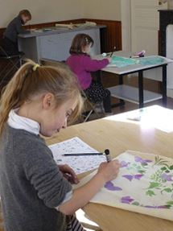Les arts sont indispensables à leur éducation. Ils bénéficient de cours de peinture et de théâtre avec Christelle, de cours de danse pour les filles avec Roxane, et de botanique avec Anne, Irène ou Xavier. En ce temps de vacance scolaire, ils sont à la maison sans jamais être livrés à eux-mêmes car il y a toujours une femme qui les accompagne. Ces enfants ne pourront pas dire qu’ils ont été laissés dans la solitude devant un écran et des jeux stupides. Leur âme a besoin d’intelligence, de beauté et d’amour qu’ils retrouvent dans les activités de loisir.
Le jeudi soir, chacun dîne chez soi.
Vendredi :
Le vendredi matin, les hommes se réunissent à huit heures pour l’entretien collectif des véhicules.
Ensuite, ils répèteront les chants pour la fête de l’équinoxe du printemps, traditionnellement associé à la reprise de l’action et de la guerre. Nous fêtons les équinoxes et les solstices pour marquer ces moments particuliers de l’année. Cela nous rappelle qu’il y a des rythmes et un temps pour chaque chose.
L’automne et l’hiver sont des moments d’intériorité où se préparent les actions qui se manifesteront au printemps et en été.
Cette conscience des rythmes est un élément d’éducation que nous voulons transmettre aux enfants. Pour chacune de ces fêtes, ils exécutent un spectacle de théâtre en lien avec la nouvelle saison.
En début d’après-midi, les femmes se réunissent à leur tour pour préparer les spectacles de danse : la pratique collective des arts donne forme et vie à la culture du clan.
Ce vendredi, Gilles et sa femme Christelle (coiffeuse de son état) sont arrivés de l’Ardèche, ainsi que Catherine (podologue) qui est montée de Narbonne. Ils resteront le week-end et repartiront lundi. Notre communauté intéresse davantage les travailleurs indépendants que les fonctionnaires qui ont un conditionnement sécuritaire et qui s’écartent moins facilement de la société conforme. Notre vie est une aventure…
Le vendredi soir est le plus festif de la semaine. Tout le monde se réunit au centre communautaire pour un banquet fraternel. C’est le moment de célébrer notre unité et la joie d’être ensemble. Durant l’apéritif, on découvre les créations musicales et la vidéo de la semaine. On discute des fausses nouvelles du monde, bercé par la harpe de Roxane.
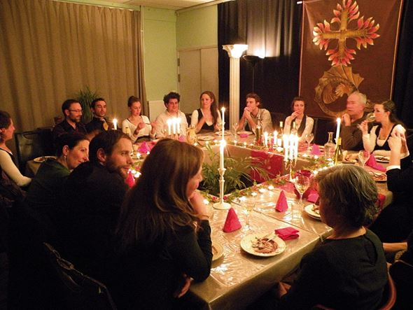Le repas se termine généralement en musique, ou en spectacle improvisé avec notre imitateur Jean-Marc qui se met en scène ! Avec ses imitations caustiques, on est contraint de pratiquer l’autocritique. « Mais il se fout de ma g... là ! »
Par la discipline de la vie clanique, nous entendons générer de la force et la joie de vivre dans une société réelle avec ceux qui nous ressemblent. À contre-courant de la société de l’antidépresseur, nous voulons reconquérir une énergie vitale chaleureuse et dynamique.
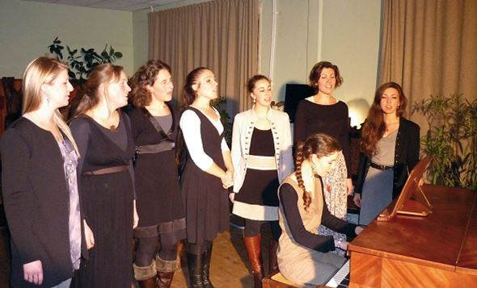
Samedi :
Nous profitons du Samedi pour faire le bilan de la semaine écoulée et terminer ce qui a été entrepris. C’est un moment réservé à une réunion avec notre directeur artistique et leader Joël Labruyère, lorsqu’il veut nous entretenir sur un sujet de son choix. Avec lui, on sort du monde connu pour visiter la face cachée des choses. On évoque des sujets qui ne peuvent hélas pas être mis sur internet ni publiés. Joël préfère composer des chansons pour l’expression publique de ses idées. C’est un choix esthétique car il en a déjà trop raconté par le passé, ce qui fut souvent comme donner des roses aux ânes.
La parole ne dit-elle pas : « Ne donnez pas de perles aux pourceaux afin qu’ils ne se retournent pas contre vous pour vous dévorer ». Message évangélique bien reçu.
À 17h30, les hommes se retrouvent pour la boxe ou la canne de combat. Parfois les nez saignent un peu.
Là encore, un dîner est servi au centre communautaire. Il n’est pas rare d’avoir à notre table un visiteur profitant du week-end pour découvrir la « communauté des Brigandes ».
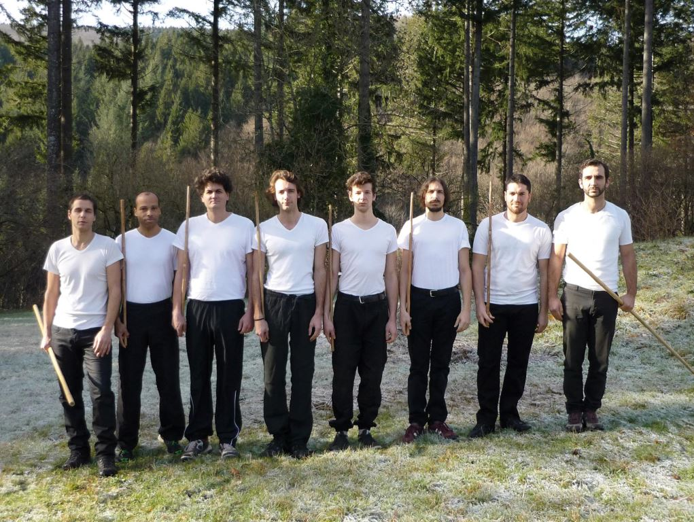Comme partout, c’est le décrochage du week-end. Certains en profitent pour sortir ensemble dans les villes proches (Béziers et Castres), faire les boutiques pour leurs besoins personnels ou aller danser le soir au bal folk.
Quand le temps le permet, on peut s’isoler sur le bateau du groupe amarré au port de Gruissan et profiter du merveilleux décor du massif de la Clape où l’on peut se croire en Grèce. Avec les beaux jours, des excursions sont prévues vers l’Espagne qui est proche par voie maritime.
Dimanche :
Chez nous aussi, le dimanche est un jour de relâche, on se repose. Certaines familles partent en balade mais la musique est toujours là pour nous ramener au studio.
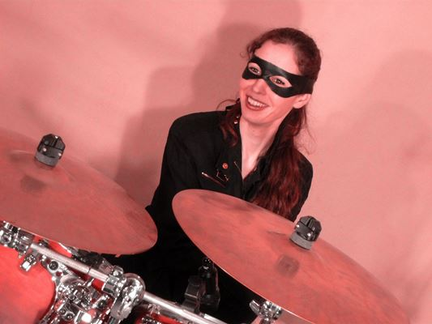Les femmes participent au cours de peinture sur textile de Christelle. Des tissus peints sont ainsi réalisés pour décorer les fêtes, les décors des clips ou encore pour des expositions locales.
Certains se retrouvent le dimanche après-midi pour un match de volley-ball ou de rugby. C’est l’occasion d’inviter des habitants du village comme le boulanger, fan des Brigandes comme d’autres commerçants. Nous avons la chance d’avoir parmi nous Claire, une professionnelle du volley de haut niveau. Si elle est la Brigande la plus discrète, ses coups sont durs à encaisser.
Demain, c’est une nouvelle semaine qui reprend, toujours sous les auspices de nos perspectives de croissance : production musicale, éducation des enfants, agrandissement du potager, activités culturelles du clan, production éditoriale, présentation de notre programme aux intéressés, etc.
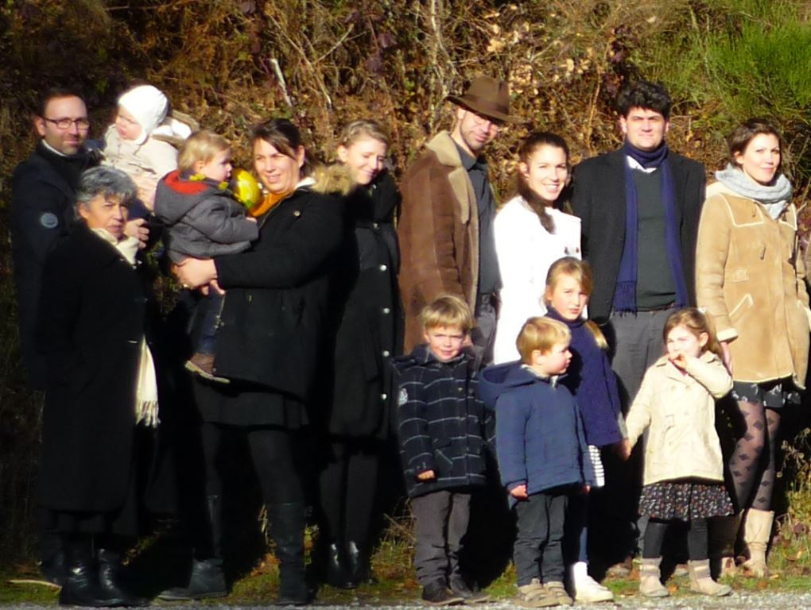En parallèle à la société individualiste, nous construisons un autre modèle social ; une microsociété basée sur la fraternité et le partage, le respect de la vie et la transmission de la culture occidentale et de ses valeurs. Malgré l’uniformisation imposée par la technocratie mondiale, nous pouvons l’affirmer : vivre autrement au XXIe siècle est possible…
Partager cette page